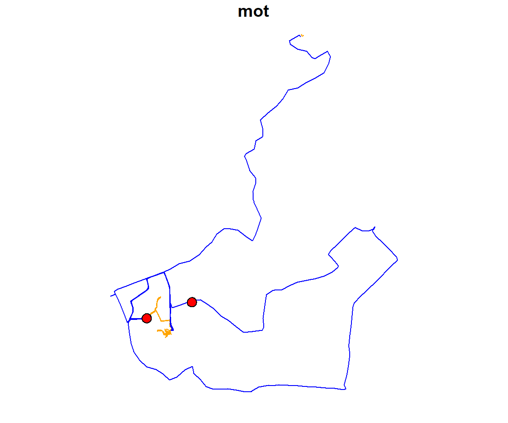

Getting started with palmsplusr
2017-12-20
Loading the PALMS dataset
A PALMS dataset (in csv format) is read in using the read_palms() function. This function checks that all required column names are present before converting the csv file to a spatial object. If columns are missing you will receive an error message.
library(palmsplusr)
library(readr)
library(sf)
palms <- read_palms(system.file("extdata", "one_participant.csv", package = "palmsplusr"))
names(palms)
#> [1] "identifier" "datetime" "dow"
#> [4] "fixtypecode" "iov" "tripnumber"
#> [7] "triptype" "tripmot" "activity"
#> [10] "activityintensity" "activityboutnumber" "sedentaryboutnumber"
#> [13] "geometry"This palms object contains 13 columns. Notice how the lon and lat columns that were present in the csv have been replaced by a geometry column. This is POINT geometry, as each row in palms represents a point.
This palms dataset contains data from 1 participant. You can plot this data to look at the distribution of points in space:
plot(palms[, c("activity", "tripnumber")])Building palmsplus
The palmsplus build process adds additional columns to the input palms dataset shown above. However, the user needs to specify what columns to add, and how to calculate them. This is done by creating a table with the name of the column and the formula used to calculate it. The function palms_add_field(name, formula, domain_field = FALSE) is used to make this table:
palms_add_field("duration", "1", TRUE)
palms_add_field("weekday", "dow < 6")
palms_add_field("weekend", "dow > 5")
palms_add_field("indoors", "iov == 3", TRUE)
palms_add_field("outdoors", "iov == 1", TRUE)
palms_add_field("in_vehicle", "iov == 2")
palms_add_field("inserted", "fixtypecode == 6")
palms_add_field("pedestrian", "tripmot == 1")
palms_add_field("bicycle", "tripmot == 2")
palms_add_field("vehicle", "tripmot == 3")The third parameter domain_field specifies whether the field should be summarized when creating days (see Building days for more info).
Each time you add a new field, a new row is appended to the global palmsplus_fields table. If this table is printed, you will see it contains the fields that were just added:
palmsplus_fields| name | formula | domain_field |
|---|---|---|
| duration | 1 | TRUE |
| weekday | dow < 6 | FALSE |
| weekend | dow > 5 | FALSE |
| indoors | iov == 3 | TRUE |
| outdoors | iov == 1 | TRUE |
| in_vehicle | iov == 2 | FALSE |
| inserted | fixtypecode == 6 | FALSE |
| pedestrian | tripmot == 1 | FALSE |
| bicycle | tripmot == 2 | FALSE |
| vehicle | tripmot == 3 | FALSE |
Any variable from the palms dataset can be used to build formulas. However, the true power of palmsplusr comes from integrating external data into these calculations.
In the next code snippet, a shapefile that represents home points is read in and buffered by 100m to create polygons. The points and polygons are plotted. This particular person has two homes.
home.points <- read_sf(system.file("extdata/shapefiles/", "home.shp", package = "palmsplusr"))
home.buffer <- palms_buffer(point = home.points, distance = 100)
# Plot
plot(home.buffer[, "identifier"], key.pos = 1)
plot(home.points[, "identifier"], col = "red", add = TRUE)
A new field called at_home is added. The formula for this field checks whether each point in palms falls inside these polygons. In the formula, notice how the home.buffer object is filtered by participant identifier. This is so each person is linked with their own home. The last quoted “identifier” dissolves the polygons by identifier. For a more detailed explanation about palmsplus formulas, please see this article.
palms_add_field("at_home", "palms_in_polygon(., filter(home.buffer, identifier == identifier), \"identifier\")")Once all of the fields have been added, you can build the palmsplus dataset using the palms_calc_palmsplus() function. This takes the palms dataset as input:
palmsplus <- palms_calc_palmsplus(palms)
#> [1/1] Computed palmsplus for: BC0627When printing the column names of the palmsplus dataset, you will notice it contains 24 columns: the original 13 plus the 11 that were added as fields.
names(palmsplus)
#> [1] "identifier" "datetime" "dow"
#> [4] "fixtypecode" "iov" "tripnumber"
#> [7] "triptype" "tripmot" "activity"
#> [10] "activityintensity" "activityboutnumber" "sedentaryboutnumber"
#> [13] "duration" "weekday" "weekend"
#> [16] "indoors" "outdoors" "in_vehicle"
#> [19] "inserted" "pedestrian" "bicycle"
#> [22] "vehicle" "at_home" "geometry"Now that the palmsplus dataset is built, it can be summarized in two ways. Building days, or building trajectories.
Building days
When building the days dataset, the data are summarized across several domains. These domains need to be specified before days can be built. Domains are added the same way fields are added.
palms_add_domain("home", "at_home")
palms_add_domain("transport", "pedestrian | bicycle | vehicle")palmsplus_domains| name | formula |
|---|---|
| home | at_home |
| transport | pedestrian | bicycle | vehicle |
Notice how the domain formulas contain fields created earlier using palms_add_field(). This is possible because the fields table is evaluated before the domains table. It is also important to know that formulas are evaluated in the order they are specified, so one domain formula can contain another domain name.
In a normal workflow, you would add domains before building palmsplus. This is because the palms_calc_palmsplus() function seen above adds additional columns to the palmsplus dataset specifying domain membership. The palmsplus dataset is them summarized into days.
Although I built palmsplus earlier, I will need rebuild it so the new domain columns are added.
palmsplus <- palms_calc_palmsplus(palms)
#> [1/1] Computed palmsplus for: BC0627Now when printing the palmsplus dataset there are 26 columns; two additional ones that represent the two domains.
names(palmsplus)
#> [1] "identifier" "datetime" "dow"
#> [4] "fixtypecode" "iov" "tripnumber"
#> [7] "triptype" "tripmot" "activity"
#> [10] "activityintensity" "activityboutnumber" "sedentaryboutnumber"
#> [13] "duration" "weekday" "weekend"
#> [16] "indoors" "outdoors" "in_vehicle"
#> [19] "inserted" "pedestrian" "bicycle"
#> [22] "vehicle" "at_home" "home"
#> [25] "transport" "geometry"The palms_calc_days() function can now be used to build days from the palmsplus dataset:
days <- palms_calc_days(palmsplus)When looking at the first five rows of the days dataset, you will notice that three fields (duration, indoors, and outdoors) are summarized for each domain (home and transport). These three fields were summarized for each domain because they were specified as domain_field = TRUE when they were created (see Building palmsplus above).
head(days, n = 5)
#> # A tibble: 5 x 8
#> identifier date home_duration home_indoors home_outdoors
#> <chr> <date> <dbl> <dbl> <dbl>
#> 1 BC0627 2013-08-26 348.50 0 79.50
#> 2 BC0627 2013-08-27 929.25 0 532.00
#> 3 BC0627 2013-08-28 651.50 0 494.75
#> 4 BC0627 2013-08-29 353.75 0 57.75
#> 5 BC0627 2013-08-30 1440.00 0 983.50
#> # ... with 3 more variables: transport_duration <dbl>,
#> # transport_indoors <dbl>, transport_outdoors <dbl>Building trajectories
Building trajectories is very similar to building palmsplus. Variables that you wish to calculate for each trajectory can be specified with the palms_add_trajectoy_field() function.
palms_add_trajectory_field("mot", "first(tripmot)")
palms_add_trajectory_field("wear", "sum(activityintensity >= 0) * epoch")
palms_add_trajectory_field("sedentary", "sum(activityintensity == 0) * epoch")
palms_add_trajectory_field("light", "sum(activityintensity == 1) * epoch")
palms_add_trajectory_field("moderate", "sum(activityintensity == 2) * epoch")
palms_add_trajectory_field("vigorous", "sum(activityintensity == 3) * epoch")
palms_add_trajectory_field("mvpa", "moderate + vigorous")As trajectories are built from the palmsplus dataset, any variables used in the trajectory field formulas should be present in the palmsplus dataset.
trajectory_fields| name | formula | after_conversion |
|---|---|---|
| mot | first(tripmot) | FALSE |
| wear | sum(activityintensity >= 0) * epoch | FALSE |
| sedentary | sum(activityintensity == 0) * epoch | FALSE |
| light | sum(activityintensity == 1) * epoch | FALSE |
| moderate | sum(activityintensity == 2) * epoch | FALSE |
| vigorous | sum(activityintensity == 3) * epoch | FALSE |
| mvpa | moderate + vigorous | FALSE |
The after_conversion parameter dictates whether the fields are calculated before or after the trip points are converted to LINESTRING geometry. Some fields can only be calculated on LINESTRING objects, such as the length of the line:
palms_add_trajectory_field("length", "as.numeric(st_length(.))", TRUE)The palms_calc_trajectories() function is used to build trajectories from the palmsplus dataset:
trajectories <- palms_calc_trajectories(palmsplus)This creates the `trajectories dataset, which has 1 row per trip, each containing the fields created above:
head(trajectories, n = 5)
#> Simple feature collection with 5 features and 10 fields
#> geometry type: LINESTRING
#> dimension: XY
#> bbox: xmin: 174.6976 ymin: -36.80079 xmax: 174.701 ymax: -36.79923
#> epsg (SRID): 4326
#> proj4string: +proj=longlat +datum=WGS84 +no_defs
#> identifier tripnumber mot wear sedentary light moderate vigorous mvpa
#> 1 BC0627 1 1 180 30 45 0 105 105
#> 2 BC0627 2 1 165 0 75 45 45 90
#> 3 BC0627 3 1 555 60 285 150 60 210
#> 4 BC0627 4 1 255 60 135 45 15 60
#> 5 BC0627 5 1 675 0 435 195 45 240
#> length geometry
#> 1 198.3973 LINESTRING (174.69962969 -3...
#> 2 125.4967 LINESTRING (174.69970838 -3...
#> 3 518.3824 LINESTRING (174.70103566 -3...
#> 4 128.9889 LINESTRING (174.69827459 -3...
#> 5 400.8963 LINESTRING (174.69794882 -3...You will also notice the trajectories dataset contains LINESTRING geometry. This means we can plot it:
plot(trajectories[, "mot"], pal = c("orange", "blue"), key.pos = NULL)
# Add the home buffer polygons to the plot
plot(home.buffer[, 1], col = "red", key.pos = NULL, add = TRUE)
The last component of building trajectories is adding trip start and end locations. This is useful when you want to identify specific trips, such as trips to work or school. This is done with the function palms_add_trip_location(name, start_criteria, end_criteria).
The start_criteria and end_criteria parameters should be fields already calculated in palmsplus. This is required so variables only have to be calculated once (i.e., when palmsplus is built). This results in a significant performance benefit.
The following example is a trip that starts and ends at_home (i.e., inside the home.buffer).
palms_add_trip_location("home_home", "at_home", "at_home")trajectory_locations| name | start_criteria | end_criteria |
|---|---|---|
| home_home | at_home | at_home |
Now the trajectories dataset can be rebuilt. Additional columns will be added for each trip location:
trajectories <- palms_calc_trajectories(palmsplus)
names(trajectories)
#> [1] "identifier" "tripnumber" "mot" "wear" "sedentary"
#> [6] "light" "moderate" "vigorous" "mvpa" "home_home"
#> [11] "length" "geometry"Notice how the trajectories dataset now contains an extra column home_home which signifies whether the trip started and ended at home.
Saving geometry and results
You can save all datasets as a csv file. As palmsplus and trajecories contain geometry, you can also save these as a ESRI shapefile:
write.csv(days, "palmsplus.csv", row.names = FALSE)
write.csv(days, "days.csv", row.names = FALSE)
write.csv(days, "trajectories.csv", row.names = FALSE)
st_write(palmsplus, "palmsplus.shp")
st_write(trajectories, "trajecories.shp")